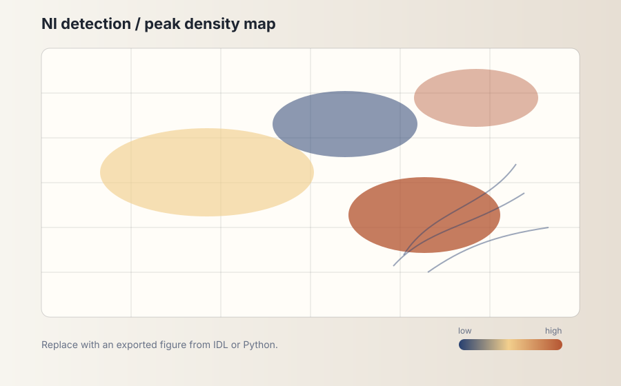
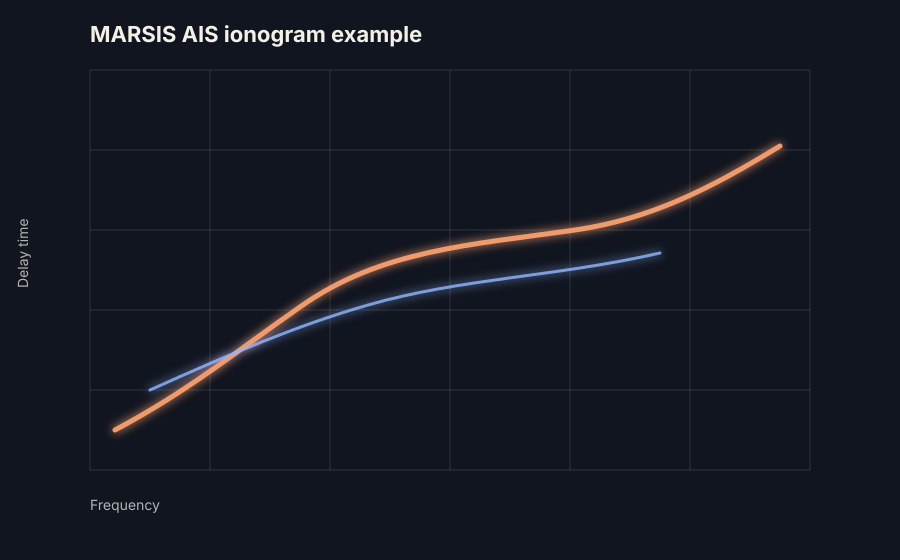
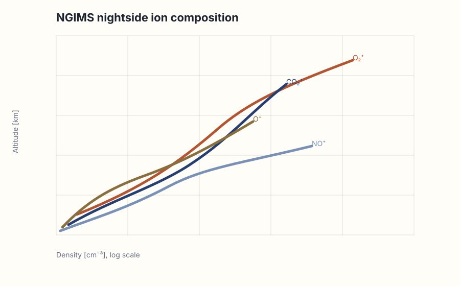

Figures and visualizations.
Use this page as a visual entrance to the research: global maps, ionograms, altitude profiles, and conceptual diagrams.

Global nightside ionosphere map
Replace with detection rate or peak electron density maps from the MARSIS dataset.

MARSIS ionogram example
Show representative NI / No-NI / noise cases and briefly explain the trace identification.

NGIMS ion profiles
Replace with altitude profiles of O⁺, O₂⁺, CO₂⁺, NO⁺, or other nightside ion species.
Figure preparation tips
For publication-derived figures, check journal copyright and use your own exported versions when permitted. For a personal website, simplified explanatory figures often work better than dense paper figures.